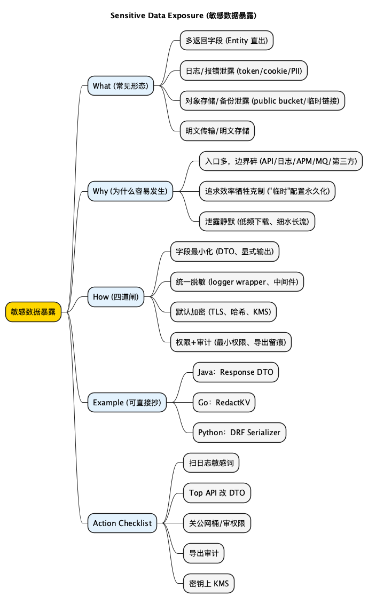

网络安全指北之Sensitive Data Exposure：敏感数据暴露
Posted on 一 02 3月 2026 in Tech
| Abstract | Sensitive Data Exposure：敏感数据暴露 |
|---|---|
| Authors | Walter Fan |
| Category | tech note |
| Status | v1.0 |
| Updated | 2026-03-02 |
| License | CC-BY-NC-ND 4.0 |
Sensitive Data Exposure：敏感数据暴露
一句话版：你以为你在"存数据"、"打日志"、"排查问题"，攻击者看到的是——你在"发快递"。
我见过太多数据泄露，不是因为黑客写了什么天外飞仙的 0day，而是因为我们自己手一抖：
- 把
Authorization、cookie、access_token打进了日志 - 把用户手机号、邮箱、身份证号原样塞进 JSON 返回
- 把对象存储桶 (S3/OSS/MinIO) 设成了 public
- 把备份文件、导出 CSV、甚至
.sql.gz挂在了一个"临时"的 URL 上，然后——它就永久临时了
更扎心的是：这类事故往往不需要高超技术。很多时候，攻击者只要会用搜索引擎、会翻目录、会跑一跑爬虫，就够了。
顺带补一句历史八卦：OWASP Top 10 2017 里有一项叫 Sensitive Data Exposure，到 2021 版本它改名成 Cryptographic Failures。
名字变了，事没变。翻译成人话：不是"敏感数据"这个问题消失了，而是大家终于承认——很多泄露，本质上是加密和密钥管理做得太烂。
我自己也踩过坑。
做远程机器人项目时，我们用 MQTT 经 EMQX 做消息传递。测试那会儿我看着后台连接列表，愣了几秒：怎么有个完全不认识的 client 连上来了？
原因其实不玄学，反而很"工程": 测试环境为了省事，把鉴权、ACL、网络边界这些东西先放一边了。你能连上，别人当然也能连上。
这事给我的教训很朴素：敏感数据暴露，很多时候不是数据本身有多敏感，而是你的"边界"太随意。
What：Sensitive Data Exposure 到底在说啥
Sensitive Data Exposure (敏感数据暴露) 说的不是"你被黑了"这么抽象，而是非常具体的几类翻车：
- 不该给的给了：API 返回了多余字段 (比如把
isAdmin、salary、privateNotes一起带出来) - 不该看的看了：未授权用户拿到了不属于他的记录 (常见于越权/IDOR)
- 不该留的留了：日志、埋点、缓存、备份把敏感信息永久保存
- 不该明文的明文：传输不加密、存储不加密、密码哈希不合格、密钥乱放
🟢 探路者注：什么算敏感数据？
一句话：能让你"社死"、"丢钱"、"背锅"的都算。别纠结定义，先把常见的拎出来：
- 身份信息：手机号、邮箱、身份证、住址、出生日期
- 凭证：密码、短信验证码、Token、Cookie、API Key、私钥
- 商业数据：合同、报价、策略、内部文档、客户名单
- 行为数据：定位、聊天记录、通话记录、访问轨迹
Why：它为什么这么容易发生 (而且经常没人发现)
我给你一个很不浪漫的结论：敏感数据暴露是"默认发生"的。
因为工程里有太多"顺手"的动作，会把数据推过边界：
1) 入口多，边界更碎
你以为数据只在数据库里，实际上它会跑一圈：
- 前端/移动端 → 网关 → 服务 → DB
- 服务 → 日志系统
- 服务 → APM/Tracing
- 服务 → 消息队列
- 服务 → 对象存储
- 服务 → 第三方 (短信、支付、客服、风控)
信任边界一多，任何一个点配置错了，就可能"漏风"。
2) 追求效率时，最先被牺牲的是"克制"
- "先把日志打全，方便排查"
- "先把接口字段都返回，前端自己挑"
- "先把桶开公网，测试完再关"
你看，都是熟悉的借口。最后事故发生时，大家也都很熟悉："这不是临时的吗？"
3) 泄露往往是"静默的"
账号被盗还有登录告警；SQL 注入还有异常峰值；但数据泄露很多时候是：
- 低频下载
- 细水长流
- 不触发报警
🔵 觉醒者反思：你现在能回答这三个问题吗？
- 你们的日志里是否出现过
Authorization:这几个字？ - 你们的数据导出/备份，默认是加密的吗？密钥谁管？
- 你们能在 30 分钟内定位：某个用户的数据是否被导出过、由谁导出、导出到哪里？
答不上来没关系。答不上来才正常——因为大多数团队都答不上来。
How：防裸奔的四道闸 (按优先级从高到低)
下面这四道闸，我按"性价比"排过序。你时间不够，就从上往下做，做到哪算哪。
1) 数据分级 + 字段最小化 (别乱给)
最常见的泄露，不在加密，而在"多返回了字段"。
- 输出 JSON：只返回 DTO/ResponseModel (不要把 DB Entity 原样序列化)
- 默认不给：需要额外权限的字段，要明确 opt-in (例如
?include=...) - 拒绝"为了方便"：接口里出现
select *这种东西，你就该警觉
🟢 探路者注：Entity/DTO 是啥？
把它理解成：Entity 是你家厨房的菜刀、燃气、油桶；DTO 是你端给客人的盘子。你总不能把油桶也端出去，说"你自己倒"吧？
2) 日志与错误信息脱敏 (别乱说)
很多公司真正的"数据外网出口"，不是 API，而是日志平台。
你要做两件事：
- 统一红线：任何日志不得出现密码/验证码/Token/私钥；用户标识尽量用 hash 或内部 ID
- 做成框架：不要靠人自觉，靠"中间件 + logger wrapper"强制执行
3) 存储与传输加密 (别明文放着)
这里不讲宏大叙事，就讲三个能落地的：
- TLS 强制：服务间通信、对外 API、回调都必须 HTTPS
- 密码哈希：用 bcrypt/argon2/scrypt (别用 MD5/SHA1，更别自己加盐玩花活)
- 静态加密：对象存储、备份、导出文件要加密；密钥从 KMS/Secret Manager 来
4) 权限与审计 (别让人偷偷搬家)
敏感数据的读取/导出，要当成"高危动作"：
- 最小权限：谁需要看什么数据，一条条写清楚 (别给全库读)
- 导出需要理由：最好留理由、留工单号
- 留痕可回放：谁在什么时间导出了什么范围、导出到哪
Example：三段你可以直接抄的示例 (Java/Go/Python)
下面示例都只做一件事：避免把敏感字段顺手泄露。
Java (Spring Boot)：不要把 Entity 直接返回
做法：定义 Response DTO，必要字段显式列出；敏感字段不出现在 DTO 里。
public record UserProfileResponse(
String id,
String displayName,
String avatarUrl
) {}
你会发现这招看似朴素，但对"字段最小化"是硬约束：你不写，它就不会出去。
Go：日志 wrapper 统一脱敏
做法：封装 logger，把常见敏感 key 统一替换。
import "strings"
func RedactKV(k, v string) string {
lk := strings.ToLower(k)
if strings.Contains(lk, "authorization") ||
strings.Contains(lk, "token") ||
strings.Contains(lk, "cookie") ||
strings.Contains(lk, "password") ||
strings.Contains(lk, "secret") {
return "[REDACTED]"
}
if len(v) > 256 {
return v[:256] + "...[TRUNCATED]"
}
return v
}
别指望每个工程师每次都记得脱敏。咱们让机器替你记。
Python (Django/DRF)：序列化层就是你的闸口
做法：用 serializer 控制输出字段；敏感字段只读或根本不暴露。
from rest_framework import serializers
from .models import User
class UserProfileSerializer(serializers.ModelSerializer):
class Meta:
model = User
fields = ["id", "username", "first_name", "last_name"]
Summary：把这事想清楚，你就赢一半了
敏感数据暴露的本质是：数据跨越了它不该跨越的边界。
你不需要一次把所有安全体系建完，但你至少要把四件事做成默认：
- 输出字段最小化
- 日志/错误默认脱敏
- 传输/存储默认加密
- 读/导出默认审计
目的无他：别把数据当赠品，也别把日志当朋友圈。
明天就能做的 5 件事 (Checklist)
- [ ] 全库扫一遍日志关键词：
Authorization/token/cookie/password(找到即修，修完加测试) - [ ] 挑 3 个最常用 API：把返回字段改成显式 DTO (拒绝 Entity 直出)
- [ ] 关掉所有"临时公网桶"：对象存储桶权限做一次统一梳理 (public 的必须能解释清楚)
- [ ] 把导出动作打上审计：最少记录
who/when/what-range/where-to - [ ] 把密钥从代码里清出去：接入 KMS/Secret Manager (哪怕先从一个服务开始)
延伸思考
如果你们今天已经大量用 AI 生成代码：你怎么保证它不会把敏感字段"顺手打印"出来？
你们是靠 code review 人肉发现，还是已经在流水线里做了 lint/规则/扫描？
扩展阅读
- OWASP Top 10 2021 - A02 Cryptographic Failures (它就是 Sensitive Data Exposure 的"升级版")
- OWASP Logging Cheat Sheet (怎么打日志才不把自己卖了)
- OWASP Secrets Management Cheat Sheet (密钥别靠手工管)
- OWASP REST Security Cheat Sheet (接口字段、鉴权、错误处理都有坑)
思维导图
@startmindmap
<style>
mindmapDiagram {
node { BackgroundColor #FAFAFA }
:depth(0) { BackgroundColor #FFD700 }
:depth(1) { BackgroundColor #E3F2FD }
:depth(2) { BackgroundColor #F5F5F5 }
}
</style>
title Sensitive Data Exposure (敏感数据暴露)
* 敏感数据暴露
** What (常见形态)
*** 多返回字段 (Entity 直出)
*** 日志/报错泄露 (token/cookie/PII)
*** 对象存储/备份泄露 (public bucket/临时链接)
*** 明文传输/明文存储
** Why (为什么容易发生)
*** 入口多，边界碎 (API/日志/APM/MQ/第三方)
*** 追求效率牺牲克制 ("临时"配置永久化)
*** 泄露静默 (低频下载、细水长流)
** How (四道闸)
*** 字段最小化 (DTO、显式输出)
*** 统一脱敏 (logger wrapper、中间件)
*** 默认加密 (TLS、哈希、KMS)
*** 权限+审计 (最小权限、导出留痕)
** Example (可直接抄)
*** Java：Response DTO
*** Go：RedactKV
*** Python：DRF Serializer
** Action Checklist
*** 扫日志敏感词
*** Top API 改 DTO
*** 关公网桶/审权限
*** 导出审计
*** 密钥上 KMS
@endmindmap

本作品采用知识共享署名-非商业性使用-禁止演绎 4.0 国际许可协议进行许可。